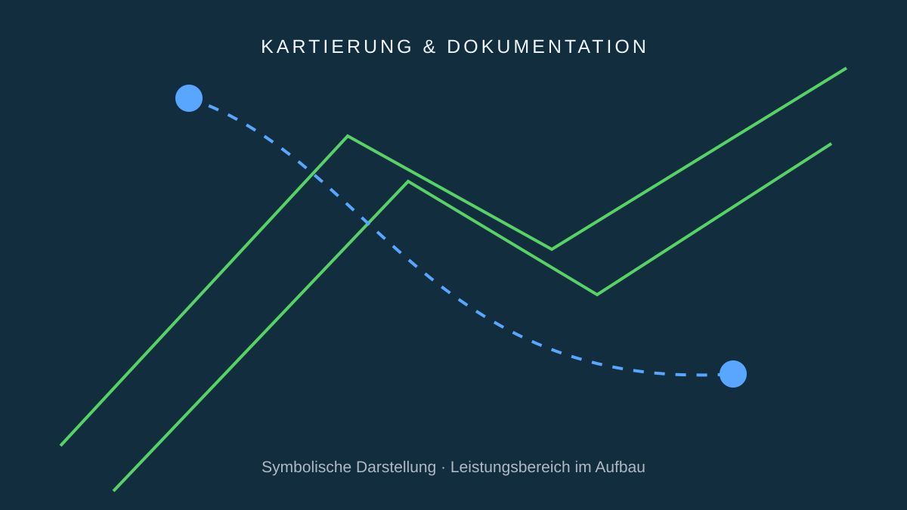

Kontrollierte Wachstumsprozesse
Modulare Regale, Wasserführung, Klima und Licht bilden die technische Basis. Konkreter Lieferant und Pilotkonfiguration sind offen.
Wir trennen konsequent zwischen heute verfügbarer Basistechnologie, laufender Auswahl und zukünftiger Eigenentwicklung.

Modulare Regale, Wasserführung, Klima und Licht bilden die technische Basis. Konkreter Lieferant und Pilotkonfiguration sind offen.
Ein DJI-Agras-System wird als mögliche Startplattform betrachtet; Modell, Sensorik und Betriebsverfahren sind noch nicht final ausgewählt.
Sensoren sollen Klima, Prozess und visuelle Felddaten erfassen. Welche Sensorik eingesetzt wird, folgt aus Pilotanforderungen.
SOUVERÄN-AI ist das geplante Entwicklungsprogramm von Bavaria AeroTech Solutions für lokale Datenverarbeitung, Pflanzenanalyse und zukünftige Drohnenintegration.
Für Sensorik, Software, Systemintegration und pilotfähige Komponenten.